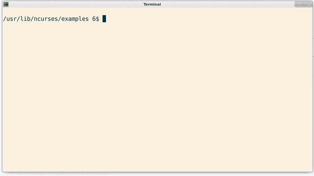

Unix was born in the years immediately following punch-card
machines.
At the time, the preferred interface for users was the physical terminal.
Although physical terminals are antiquated, the idea persists in
modern contexts because it is a very good low-level interface to the machine:
It is often used by developers and system administrators to quickly get things done.
History:
Physical Terminals
A physical terminal is a computer peripheral similar to a typewriter.
The earliest examples printed output onto paper;
this technology was carried over from the
teletypewriter,
a device for sending telegrams.
Paper-based terminals persisted well into the 1970's, and later electronic typewriters
sometimes support terminal mode,
allowing them to interface with computers via serial cable.
Ken Thompson (sitting) and Dennis Ritchie at PDP-11 in the "UNIX Room" of Bell Labs
As technology developed and interactive computing became more popular,
hard-copy terminals were phased out in favor of
screen-based entities.
The resulting devices consisted of a monitor and keyboard.
The monitor was unlike a modern monitor in that it contained a buffer
(on the order of a few kilobytes[3])
which maintained the text currently on screen.
In addition, it contained a font table to be referenced
when drawing each character— that is, it included its own font.
Physical terminals were used for decades,
especially in situations demanding multiple access to large databases, such
as airlines and libraries.
In such a situation, the computational infrastructure forms a tree,
with the system's administrators at the root, end-users at
the leaves.
Terminals
Terminals persist on modern hardware in the form of terminal emulators.
These are user-space processes that, well, emulate an old terminal!
Specifically, they provide a GUI front-end to a
typewriter-style, line-by-line interface:
xterm— A terminal emulator for the X Window System. Common, old, stable
alacritty— A GPU-accelerated terminal emulator, written in Rust
edex-ui— A terminal emulator designed to make you look insanely badass
Aside:
The files we are interested in are /dev/pts/*
These emulators are "dumb", in the sense that they do nothing except
display text and return text.
Per tradition, the Unix environment presents these connections as files.
Since they are emulating a device, we can expect to find them in
/dev.
Terminal emulation can become quite involved;
for this introduction, and for most purposes, it is sufficient to recognize that
terminals and shells are distinct, cooperating processes.
Shells
Aside:
Desktop environment serve a role analogous to shells.
A shell is a program which interprets and executes our (arbitrary) commands;
it is a shell in the sense that it is the outermost layer of the
operating system, and the one which the user has direct contact.
Unix deviates from most operating systems designs by entertaining
the shell as an ordinary user-space process: From a software
architecture standpoint, it is just another running program.
Learning to use a shell amounts to learning how it handles
each command given to it.
Here we'll study bash, but note that other shells
in Linux operate similarly.
Decomposing Lines
aka "Parsing"
Commands and Builtin's
It is often valuable to know how bash searches
for programs.
Most commands that users enter into a shell are separate programs.
For instance, when a user enters,
$ ls
the shell finds the ls(1) executable, forks itself, and
instructs the child process to execute that binary.
The ls program then reads its current directory's
entries and prints them out.
The shell
waits
until ls terminates, then returns with a prompt.
This happens very quickly.
While this strategy is certainly preferrable, there are times
where it will not work.
For instance, changing the current directory must be carried out
by bash itself, since it is a per-process attribute.
Commands such as these are called builtins, and can be
listed by,
$ help
Where help is, itself, a builtin.
Aside:
Desktop environments serve a role analagous to shells.
The Standard File Descriptors
Each process on a *nix system is created with three open files,
Standard In,Standard Out and Standard Error:
Aside:
Although these files are opened for every process,
we interact with them most often at the command line.
By default the shell connects each command-line utility's standard-in to
the keyboard, and both standard out and standard error to the terminal screen.
These are, in fact, the shell's own connections; each
process that the shell creates
inherits the shell's file descriptors.
Consider the echo utility.
This program reads each argument passed to it, and prints each to standard
out:
$ echo one two three
one two three
Here, neither STDIN nor STDERR are used (although they are open).
Rather, the arguments are passed to the kernel during the
execve(pathname, argv, envp)
system call, which places them within the address space of echo,
which in turn simply reads them from within itself and prints them to (its) standard out:
The name argv is short for argument vector, and
is a pointer to an array of character pointers.[1]
It exists within each process, and the first element it points to
is always the name of the called program.
We turn back to the operation of the shell.
As each line is read by the shell, it is broken down into tokens, which
are delimited by space(s) or tab(s).
The first token (here, 'echo') is always interpreted as a command.
The other tokens were interpreted as arguments, so that our call to echo
passed three arguments.
By default, the shell connects each command-line utility Standard-out
to the terminal screen, Standard-in to the keyboard, and
Standard-error to the We can change this, though:
$ echo one two three > boo
This is called redirection— Formally, we have redirected the
standard-out of the echo utility to a file called boo by using
the redirection operator >.
This is a facility of the shell; echo is not involved in any way.
To explain, in the command above, the shell first opens
the file boo, creating it if it does not exist, and truncating it
to zero length if it does exist (and is writeable).
Then the shell connects its own standard out to it, and executes echo.
Echo blindly prints its output to standard out, which happens to
be the file boo, and not the terminal screen.
Special Characters
Terminal special characters are like escape sequences, but in the other
direction. They are key-combinations typed at the keyboard
which are interpreted by the terminal driver and mapped to special
actions.
There are sixteen commonly mapped terminal special characters;[15]
most of them can be remapped by manipulating the termios struct.
Here are a few:
CTRL-C— Send the interrupt signal, SIGINT, to the foreground process. This is the principal
means of terminating an unresponsive process.
CTRL-D— Write the End-of-File character, EOF, to
standard-in of the foreground process. This will terminate a Bash session,
for instance, or an interactive Python session.
CTRL-S— "STOP" Upon receiving this character combination, the terminal
driver stops, and attempts to store, all data to and from the terminal.
This can make it appear as though the terminal has frozen.
CTRL-Q— "START" Restart terminal input and output.
If input or output is queued, the terminal driver will send it first, then resume normal operation.
Start and Stop were more useful in times' past: The effect was to pause scrolling.
In addition, the bell character was traditionally sounded when output was stopped and the terminal
line discipline's buffer became full, thereby warning the user that data was being discarded.
From the command prompt, we can list all bindings to special characters, in addition to other terminal attributes by,
$ stty -a
Hope you enjoyed this— more to come!
Terminal Line Discipline
For all text terminals, bytes flow from the keyboard to the computer, and bytes flow from the computer to the screen.
In particular, bytes do not flow directly from the keyboard to the terminal's monitor;
the reflection of typed characters on-screen is a function of the computer itself,
and not a function of the terminal.
We can shut off this functionality by the following:
From the shell,
$ stty -echo
Or, in a Posix-conforming environment,
#import <termios.h>
[...]
// Turn off echo, so typed user input does not show up
assert( tcgetattr(STDIN_FILENO, &term) >= 0 );
term.c_lflag &= ~ECHO;
assert( tcsetattr(STDIN_FILENO, TCSANOW, &term) >= 0 );
Both of the above examples manipulate a very important C struct
called termios.
The termios struct belongs to the kernel; specifically, it belongs to a
kernel module called the terminal line discipline.
All characters which pass through a terminal device file
pass through the terminal line discipline;
the termios struct is how we manipulate its behavior, and thus,
the behavior of keypresses.
Aside: X Window System
The X Window System serves a role roughly analgous to the terminal line discipline:
It facilitates the interaction between mouse, keyboard and monitors with application programs,
though it exists in user-space rather than kernel-space.
It is server it controls system resources,
and provides an interface for other programs to interact with[14].
To explain, we start at the root. All keyboards send
scancodes
to the computer. These are received and interpreted by a terminal
device driver, yielding keycodes. Then, within the same driver, are usually converted to ASCII.
This information is then passed on to our terminal line discipline.
The examples above modify the terminal line discipline's default
behavior by manipulating the termios struct (indirectly in the first case,
and directly in the second case).
The default behavior is what is present at a shell prompt, and is intended
to allow reasonable line-wise input by humans; it is called "canonical" or "cooked"
mode, as opposed to "raw" mode (in which the terminal line discipline
does nothing).
This information, once it has been passed to the terminal line discipline,
is then sent to a tty file, where a program can access
it by reading the file. The terminal line discipline is
positioned exactly between the keyboard's hardware driver and
each program's read/write system call.
This allows it to intercept character combinations, such as
CTRL+S and CTRL+D, map them
to non-characters, and send the information (called signals)
to the appropriate place.
The termios struct is often manipulated by text-based programs,
for instance, to turn off line-buffering and generate an interactive program.
A common library for facilitating this is NCURSES.
Its sister libraries panel, menu and form provide an extension to the basic curses library.

Example from ncurses library
For another example of nCurses usage, check out AlsaMixer (probably already installed).
Escape Sequences
It's worth repeating at this point that the terminal proper only sends a stream of bytes, and
merely receives a stream of bytes.
That is, the only method of sending data to a terminal monitor is by the same channel as
printable characters.
As a consequence, it is necessary to establish some common standard for communicating to the terminal
non-printable, or control, characters, such as "newline."
In the US, printable characters were traditionally mapped via ASCII (with the exception of some early IBM mainframes).
The first 32 ASCII characters (decimal 0 through 31) are control characters, rather than printable.
They include the famous bell character, and both tab and newline (aka, "linefeed");
in order to delete previously written text, one can print the backspace
character, decimal 8 (see man ascii for more information).
Most of these control characters quickly became antiquated, so that the majority are not widely used.
For instance, ASCII alone does not provide provisions for moving the cursor or scrolling.
As a consequence, the more extensible mechanism of escape sequences was developed.
The sequences in use were soon standardized by ANSI, and their support became ubiquitous.
Each of these sequences begins with the ASCII "escape" control character (decimal 27)
and the left-bracket "[" printable[13].
They are sequences of entirely ASCII characters.
Technically, the're terminal-specific, but are still viable today
because modern emulators typically
implement a superset
of older terminals' escape sequences.
Within C, to print Hello World! in reverse, we could do
#include <stdio.h>
int main() {
printf("\033[7m Hello World! \033[m");
}
So, by merely printing a special sequence through stdout to the terminal, we have
modified the state of the recipient terminal.
A few notes:
033 above is octal format, with decimal equivalent 27.
This "setting" is persistent (try omitting the trailing \033[m )
To send an escape sequence from the keyboard, type CTRL+V, then ESC. You should see ^[
There are often dozens of such escaped sequences,
including such novelties as "set smooth scroll"; most real terminals can even change fonts.
Some escape sequences may take parameters such as coordinates.
In this case, the parameters
become part of the escape sequence.
An LGR Thing
References
Kernighan, Brian. Unix: A History and a Memoir. Published 2020, by Brian W. Kernighan via Kindle Direct Publishing.
Libes, Sol. Small Computer Systems Handbook. Published 1978, by Hayden Book Co.
_and_Dennis_Ritchie_at_PDP-11_(2876612463).jpg)